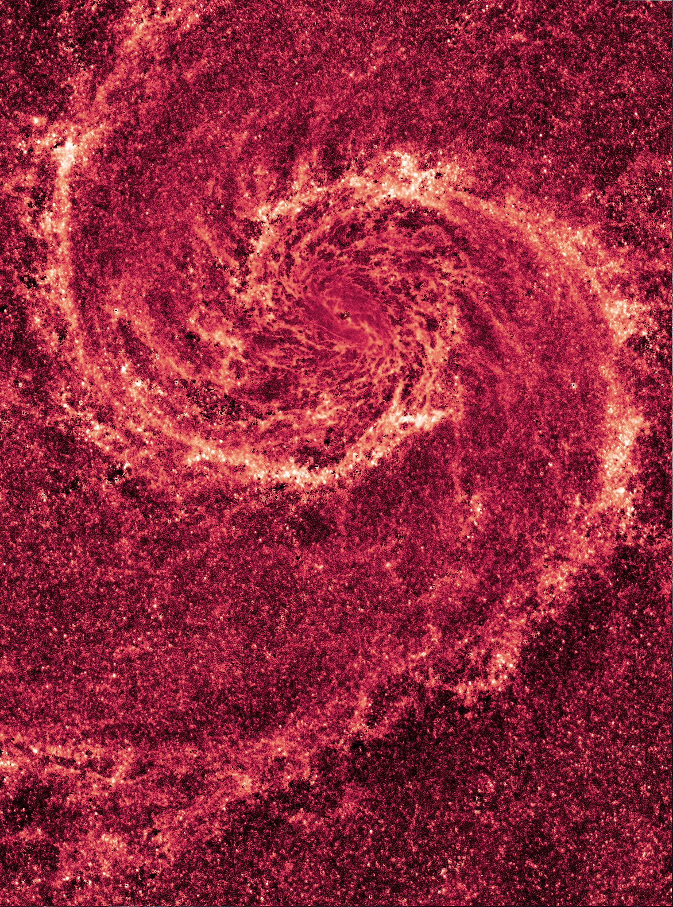

E:1552. Processing.... Processing.. *Place(UNKWN)* TIME: 3:26AM *TUE* REDACTED REDACTED CA-L...
AUDIO. FILES #0988: im not sure about how this place would even come to be formed. I recently just woke back up from "Wavena" REDACTED. I just... Im not too sure how to explain it... Doctor faber gave me a go pro. He said there was infared ultra wiithin the camera frame and a lense that was constructed with a bunch of bullcrap. which granted, i cant really find a real means outside of the fact i dont fuckin know what i just saw. I think there was something, again.... it felt- hmm.
REDACTED: Faber**: what was it that you saw?
Joemirah: its hard to explain faber, i-
REDACTED
Im trying my best faber, seriously. How far are you willing to go for this? at this point youre getting more hungry than me. rel-
Faber: you don't understand this yet? how Joe? how cabn you possibly come up with such a conclusion to a point where i seriously have to laugh at you. This is disapointing. Utterly. I dont understand why.... Youre failing me. I though-
I dont think i can keep doing this anymore faber, im tir-
The last thing i wanted to hear was that..... Take a break, Sophia will take over youre place for now.
